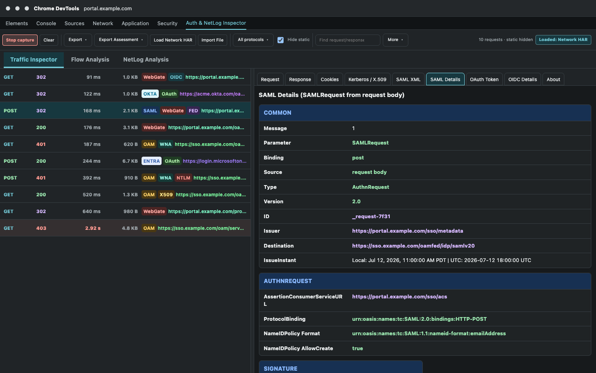
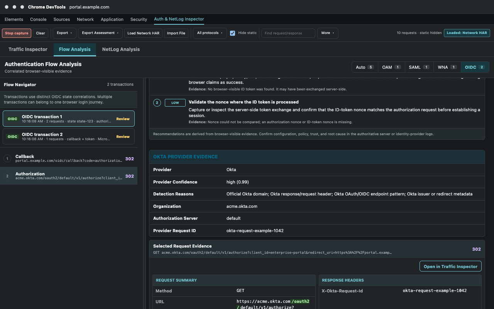
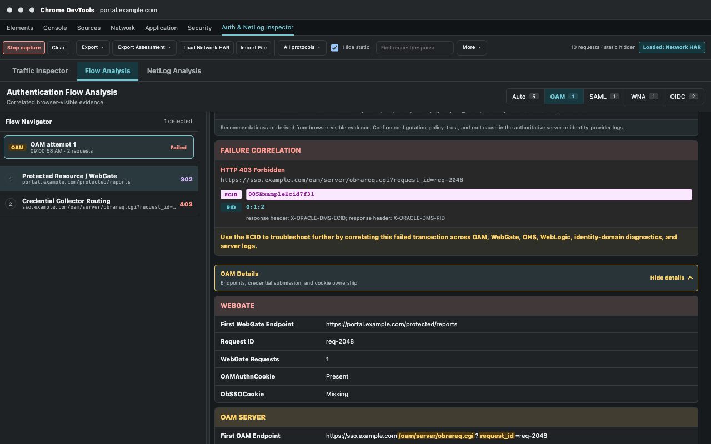
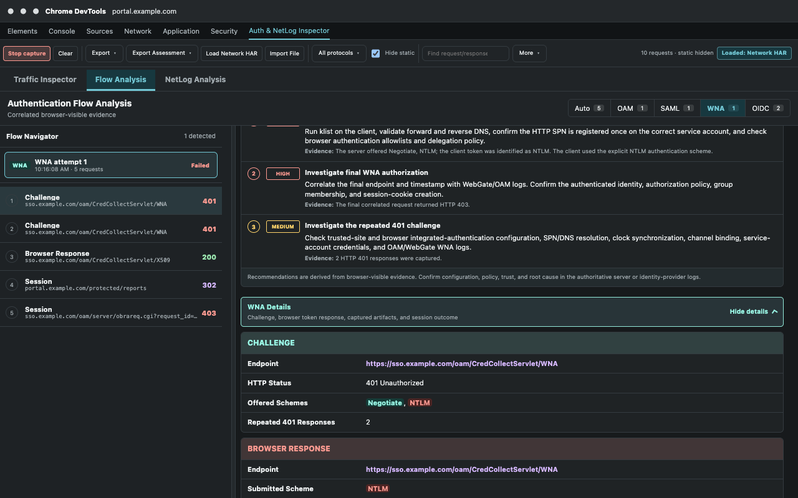

Issue-resolution playbooks
Troubleshoot an authentication flow step by step
Use these playbooks when a login redirects incorrectly, stops at an identity provider, falls back to NTLM, rejects a client certificate, returns an OAuth/OIDC error, or succeeds without creating the expected application session.
Use the same investigation method every time
- Define the symptom. Record the starting URL, expected result, actual result, test account, and approximate failure time.
- Capture one clean attempt. Open DevTools on the application tab, clear earlier traffic, start capture, reproduce once, and stop capture.
- Reduce noise. Enable Hide static, select the relevant protocol filter, and reset filters before deciding that evidence is missing.
- Read browser order. Follow redirects from the first protected resource through the gateway or identity provider and back to the application.
- Inspect request evidence. Review Request, Response, Cookies, and the applicable protocol-details tab for the selected row.
- Correlate the transaction. Open Flow Analysis, select the detected attempt, verify every associated request, and read validation checks and next actions.
- Preserve correlation values. Record ECID, request ID, SAML ID/InResponseTo, OIDC state, Entra trace/correlation ID, or Okta request ID where available.
- Export the assessment. Use the sanitized Markdown report for routine sharing and the full diagnostic report only within a controlled support team.
SAML / federation
SAML login stops, loops, or returns an error
Typical symptoms: the browser remains at the identity provider, the service provider rejects the response, a login loops, or the application shows an audience, destination, signature, or expiry error.
Capture and isolate
- Clear the panel, start capture, and reproduce one login from the service provider.
- Stop capture after the error or final application return.
- Select Protocols > SAML and temporarily keep Hide static enabled.
- Find the outbound request containing
SAMLRequestand the return request containingSAMLResponse.
Inspect the evidence
| Where | Verify | Problem clue |
|---|---|---|
| SAML Details - Common | Request ID, response InResponseTo, issuer, destination, version | InResponseTo does not match the initiating request, or destination is not the expected ACS |
| Status | SAML status and nested status message | Anything other than success, especially responder or authentication failures |
| Conditions | NotBefore, NotOnOrAfter, and audience | Expired assertion, clock-skew problem, or wrong service-provider audience |
| Signature / certificate | Expected response or assertion signature and certificate dates | Expected signature absent, certificate expired, or certificate not yet valid |
| Response request | RelayState and posted form destination | RelayState lost or response posted to a different environment |

Resolve or escalate
- Correct the service-provider ACS, entity ID, identity-provider issuer, audience, or metadata when browser evidence shows a mismatch.
- Compare certificate validity and signing expectations; the extension identifies visible signatures but does not cryptographically validate trust.
- If the request exists but no response returns, investigate identity-provider policy and authentication using the request ID and timestamp.
- Provide both SAML message IDs, issuer, destination, status, timestamps, and the sanitized assessment to the federation administrator.
OAuth 2.0 / OpenID Connect
Authorization succeeds but the callback or application fails
Typical symptoms: invalid state, redirect URI mismatch, missing callback, repeated authorization, access denied, expired token, wrong tenant, or successful identity-provider authentication followed by an application error.
Capture and isolate
- Capture one login from the client application through the authorization server and back.
- Select Protocols > OAuth/OIDC/Bearer. Rows may match because they carry OIDC parameters or Bearer evidence even when only canonical endpoints receive the OAuth tag.
- In Flow Analysis, select OIDC and choose the transaction matching the login time and state value.
- Confirm that the authorization request and callback belong to the same transaction before interpreting validation results.
Inspect the evidence
| Evidence | Expected | Problem clue |
|---|---|---|
| Authorization request | Correct client ID, redirect URI, response type, scope, state, nonce, and PKCE challenge | Wrong environment, unregistered URI, missing state/nonce, or absent PKCE where required |
| Callback | Returned code or explicit error and the original state | No callback, provider error, or state mismatch |
| ID token | Expected issuer, audience/client ID, lifetime, nonce, and subject | Expired token, wrong issuer/audience, or nonce mismatch |
| Provider evidence | Expected Oracle, Okta, or Microsoft Entra authority and tenant | Unexpected tenant, authorization server, AADSTS error, or Okta error |
| Browser scope | Callback is visible even when token exchange is server-side | No browser-visible token is not automatically a failure |

Resolve or escalate
- Correct registered redirect URIs and client configuration when the captured request differs from the provider registration.
- Investigate application session creation when the callback succeeds but the browser returns to an unauthenticated application.
- Do not report a missing browser token as a defect when the application performs the code exchange on its backend.
- Preserve state aliases, timestamp, provider error, tenant, Entra trace/correlation IDs, or Okta request ID for provider and application logs.
Oracle Access Manager / WebGate
Protected resource redirects but no authenticated session is established
Typical symptoms: repeated redirects, return to the login page, OAM error page, credential submission without application access, missing session cookie, or a slow OAM/WebGate exchange.
Capture and isolate
- Start at the protected application URL, clear the panel, and reproduce one login.
- Select Protocols > OAM/WebGate and keep Hide static enabled.
- In Flow Analysis, select OAM and choose the attempt matching the start time.
- Read the sequence from protected resource/WebGate to OAM credential collection, credential submission, WebGate reply, and application return.
Inspect the evidence
| Stage | What to inspect | Problem clue |
|---|---|---|
| Protected resource | Initial status and Location redirect to obrareq.cgi | No OAM redirect or redirect to the wrong host/port |
| Credential routing | obrareq.cgi/obreq.cgi, authentication scheme, request ID | Looping collector route or unexpected WNA/X.509/form scheme |
| Credential submit | Actual submit endpoint and HTTP result | 4xx/5xx, error body, or return to the collector |
| Session transition | OAM_ID, OAM server cookies, OAMAuthnCookie/ObSSOCookie, and redirects | Expected OAM or WebGate session cookie is not created or not returned |
| Application return | Final URL, status, timing, and session behavior | No return, another challenge, unauthorized result, or redirect loop |

Resolve or escalate
- Use cookie ownership highlights to determine whether the missing transition belongs to WebGate or the OAM server.
- Use the first failing request rather than the final error page as the starting point for log analysis.
- Search WebGate, OHS, OAM, WebLogic, and application logs using the captured ECID, RID, request ID, timestamp, host, and endpoint.
- Include the complete redirect sequence and note whether credential collection, session creation, and application return were observed.
Kerberos / Windows Native Authentication
Negotiate challenges repeatedly or falls back to NTLM
Typical symptoms: repeated 401 responses, a browser credential prompt, WNA collector failure, Kerberos not selected, or NTLM shown in red.
Capture and isolate
- Capture the protected request from a domain-joined test system where WNA is expected.
- Select Protocols > WNA/Kerberos/NTLM.
- Open Flow Analysis, select WNA, and verify the challenge and browser response are in the same attempt.
- Select the relevant requests and open Kerberos / X.509 for header-level evidence.
Interpret the exchange
- An initial
401withWWW-Authenticate: Negotiateis an expected challenge, not automatically a failure. - A following
Authorization: Negotiateindicates that the browser submitted an SPNEGO token; its presence does not prove that the embedded mechanism is Kerberos. - An explicit NTLM token or NTLM fallback indicator means Kerberos was not used and should be investigated when Kerberos is required.
- Repeated challenges with no browser token indicate browser policy, trusted-zone, URL, or client configuration should be checked before server authentication.
- A submitted token followed by rejection requires SPN, service account, keytab, DNS, clock, KDC, and server-log validation outside the browser.

Resolve or escalate
- If no token is sent, validate browser integrated-authentication policy, trusted URL configuration, proxy behavior, and hostname use.
- If NTLM is sent, verify DNS canonicalization and SPN registration before treating the OAM endpoint as the primary cause.
- If Negotiate is rejected, provide the challenge sequence, host, WNA endpoint, timestamps, HTTP statuses, and token scheme; do not share token bytes broadly.
X.509 authentication
A client certificate is requested but authentication fails
Typical symptoms: no certificate prompt, wrong certificate selected, certificate accepted by TLS but rejected by the application, expired certificate, or OAM X.509 collection failure.
Capture and inspect
- Capture one attempt beginning at the protected X.509 resource.
- Select Protocols > X.509 and locate
/oam/CredCollectServlet/X509or forwarded certificate evidence. - Open Kerberos / X.509 and review the visible subject, issuer, serial number, validity period, and thumbprints.
- Check Request and Response for forwarded certificate headers, redirects, status, and OAM/WebGate session cookies.
Resolve or escalate
- Correct expired or not-yet-valid certificates and confirm the expected issuing CA and subject-mapping rule.
- Verify that the proxy or web tier forwards certificate information in the header expected by the application or OAM integration.
- Provide subject, issuer, serial number, thumbprint, collector endpoint, timestamp, ECID/request ID, and final HTTP result without sharing private keys.
Offline troubleshooting
Analyze a HAR captured on another system
Prepare the evidence
- On the affected system, open Chrome DevTools before reproducing the login.
- In Network, preserve the log if navigation clears requests, reproduce one clean attempt, and export the HAR with content through the approved process.
- Transfer the HAR securely. Treat it as sensitive until it has been reviewed and sanitized.
Import and analyze
- On the analysis computer, navigate to any ordinary
http://orhttps://page before opening DevTools. New Tab and otherchrome://pages cannot host the panel. - Open DevTools and select Auth Flow Inspector. The open page does not need to be related to the imported HAR.
- Select Import File and choose the HAR or panel JSON export. Use Load Network HAR only for entries already available in Chrome's Network model.
- Wait for the imported request count, then use protocol filters and Flow Analysis as for live traffic.
- If decoded SAML, bodies, cookies, or token evidence is absent, verify that the source HAR retained request/response headers and content.
- Export a sanitized assessment after selecting the relevant transaction.
Build an engineering-ready handoff
A useful escalation should let another engineer find the same event without replaying the entire investigation.
| Include | Why it matters |
|---|---|
| Expected and actual result | Defines the failure precisely and prevents investigation of normal protocol behavior |
| Start/end time and timezone | Narrows identity-provider, OAM, proxy, and application logs |
| Starting URL and participating hosts | Identifies the application, gateway, provider, tenant, and environment |
| First failing or incomplete request | Focuses analysis before secondary redirects and error pages |
| Correlation identifiers | Connects browser evidence to ECID, request, provider, and application logs |
| Protocol findings | Captures SAML status/IDs, OIDC state/errors, WNA scheme, certificate metadata, or cookie transition |
| Sanitized assessment | Provides the correlated timeline, validation checks, evidence, and recommended next actions |
| Capture limitations | Prevents an absent server-side exchange from being treated as browser-visible proof |